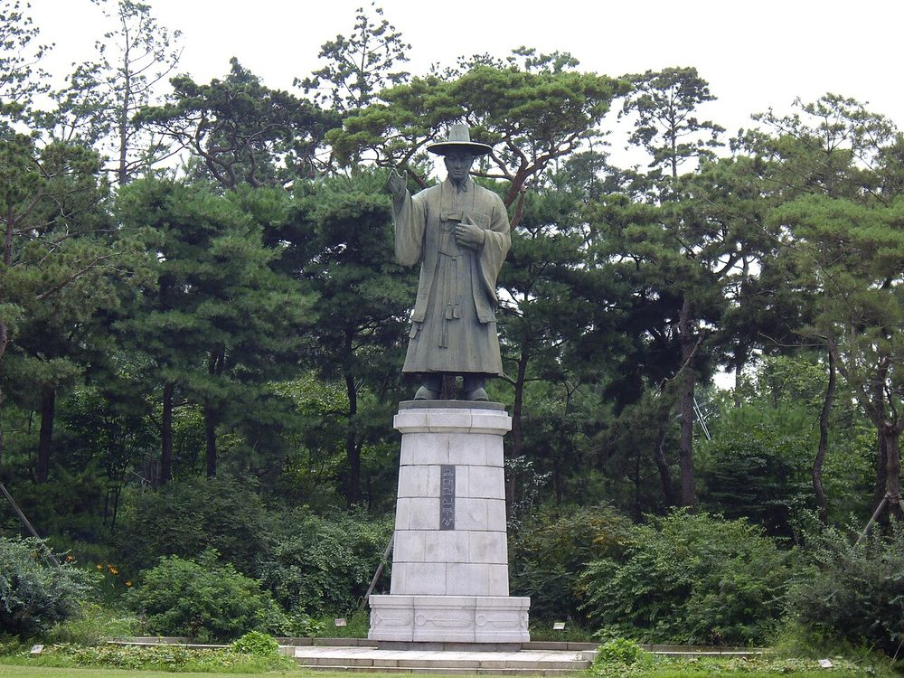

1821년 충청도의 독실한 천주교 집안에서 태어났어요. 그의 집안에서는 증조부·아버지까지 여러 순교자가 났을 만큼 박해의 한복판에 있는 가문이었죠. 김대건은 어려서부터 신앙 속에서 자랐고, 1836년 열다섯의 나이에 조선에 몰래 들어온 프랑스 선교사들에게 선발돼 신학생이 됩니다.
동료 둘과 함께 그는 멀리 <b>마카오</b>까지 걸어서·배로 유학을 떠났어요. 그곳에서 라틴어와 여러 외국어, 신학과 철학을 익히며 사제가 되기 위한 길고 고된 공부를 했죠. 전쟁과 병으로 동료를 잃는 가운데서도 그는 끝내 학업을 마쳤어요.
1845년, 김대건은 상하이에서 <b>사제 서품</b>을 받아 마침내 조선 최초의 한국인 신부가 되었어요. 그리고 박해의 위험을 무릅쓰고 조선으로 돌아와, 숨어 지내는 신자들을 돌보고 새 선교사들이 들어올 바닷길을 여는 일에 힘썼죠.
1846년, 선교사 입국을 돕다 체포된 그는 모진 문초를 받으면서도 흔들리지 않았어요. 옥중에서 그는 신자들을 위로하는 편지를 쓰고, 조선의 지리를 정리해 서양에 알리는 일까지 했죠. 그해 9월, 한강 가 새남터에서 순교했어요 — 그의 나이 겨우 스물다섯, 사제가 된 지 1년 남짓이었어요.
그는 1984년 교황 요한 바오로 2세에 의해 순교자 103위의 한 사람으로 성인品에 올랐고, 2021년에는 유네스코가 정한 <b>세계 기념 인물</b>로 선정됐어요. 한 시대의 박해를 넘어, 인류가 함께 기억하는 인물이 된 거예요.